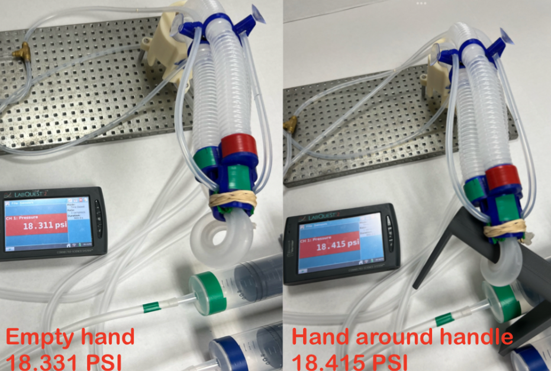
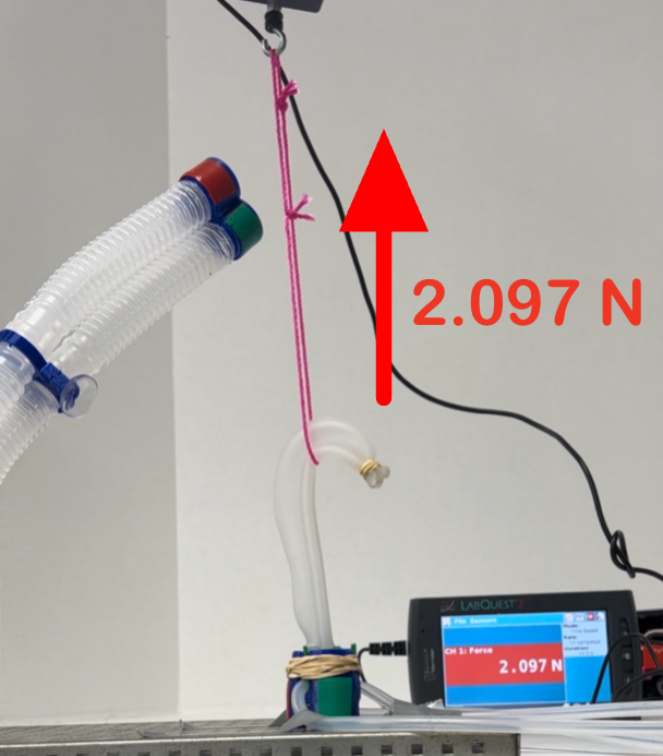

Full System Test
In this test we used the full arm system to pick up a 3D printed handle with the same dimensions as the handles on the ISS. Although the arm has some stability issues while supporting the weight of the hand and the handle, this will not be an issue in a real microgravity environment. Ideally the hand would be slightly longer so it could wrap all the way around the handle for a more secure grip, but we could not mold another one in the time that we had.
Pressure Sensor Test
We incorporated a pressure sensor into the hand to detect when it had grabbed an object. Ideally we would have a pressure sensor for every LSOVA in the arm and hand to detect all contact but due to cost constraints that was not possible. In this test we measured the pressure in one third of the hand when it is around an ISS handrail and when it is not. The pressure in the LSOVA was 0.084 PSI higher when the hand was holding onto the handrail. By calculating the expected pressure in each segment of the arm and detecting when it raises unexpectedly, we can detect when the arm has grabbed onto something.
Extension Test
One of the design requirements for the arm is that it must expand and contact by 12in. Our prototype main arm can expand and contact by 8in and can reach just over 12in with the hand attached. This distance could be easily extended by making the main arm longer.

Arm Strength Test
In this test we used a force gauge to get a rough estimate of the strength of the arm. We secured the force gauge to the base plate and attached a string to the end of the arm. We then pulled on the string with the arm until it failed. The maximum force that the arm could exert was 1.225 Newtons.

Hand Strength Test
In this test we used a force gauge to see how much force the hand could hold onto before it failed. We looped a string around the force sensor and in the hand. The maximum force that the hand could hold onto was 2.097 Newtons.
